Animation Setup
General Information:
There are a couple of ways that you can get animation into the game. You can animate all of the sequences in one file and export it as a DTS (as was done in the Simple Shape tutorial) or, you can have every sequence in its own 3DSMAX file, export them as DSQ files and merge them in at runtime with a .CS file. Having the base mesh and skeleton in one max file and having each sequence contained in its own Max file is the preferred way to do it as it gives more explicit control of the nodes being exported and allows more control of the character. For simple shapes with only a few animations, putting the sequences in the main 3DSMAX file will work fine. For characters, save each sequence in it's own file and export the sequences as DSQs.
Threads:
To fully understand the animation system in the engine, one must realize that several animations (called threads in the engine) can be played concurrently, at different speeds in both directions, and can control different parts of the hierarchy.
If two threads try to control the same node, the sequence priority (covered in the Sequence Object Parameters section) will determine which thread controls a particular node.
In practice, the best way to go about doing things is to export different types of animation to control different parts of the character, and then have them hooked up to different controls. In the game, you can look around while running. Instead of having a run-look -left, run -look-middle, run-look-right, there is a run animation, and a look animation that are being played at the same time. In this way, you can get a great deal of flexibility out of very few animations.
The Look animations are controlled by the mouse (running on one thread) while movement is controlled on another thread which is controlling the lower body animations (forward, back, side). Celebration and death animations control the whole body and are played on the same thread as the body movement animations.
Viewing multiple threads is the ShowTool will be covered in greater detail in the ShowTool section.
Using .CFG files to control node structure in DSQ files:
By default, all transform animation in a shape during a sequence is exported. If a node differs from the default position in a sequence then the transform on that node is considered animated even if it is unchanging throughout the sequence. The default position for all nodes is determined by the node position at frame 0 in the 3DSMAX file. If collapse transforms is on, non-animating nodes will be collapsed out. If left unchecked, all nodes will be exported whether they animate or not, and as such, will be considered animating.
It is preferable to use .CFG files to determine which nodes are being exported to a particular thread, force export needed nodes, manually cull out useless nodes (or ones with potential conflicts) and otherwise take steps to ensure that threads do not fight for control of the same nodes.
By using .CFG files, you can for instance, animate and export animation for the lower body only and then other animation for the upper body only, and play two threads without conflicts.
By explicitly culling out certain nodes, you can ensure that conflicts do not occur. Often the nodes that do not appear animated are indeed animating. This is especially true when using IK to animate, as the transform values of a node may be animating but it might not be visible.
So, the ideal situation is to separate your animations into different types. Full body, upper body only, lower body only, arms only, hands only, facial animation only, etc.
Create a separate directory for each animation type and make a custom .CFG for each type, culling out the un-needed nodes in the "Never Export" list. Remember that the .CFG does not need to be named DTSScene.CFG. You can (and should) name them appropriately for the type of animations you are exporting.
Alternately, you can use 'Sequence priority' to determine which thread controls a node when conflicts occur, but this is a somewhat clunky way to deal with the situation. It is better to use the .CFG files to control the node structure of your .DSQ files to ensure there are no conflicts.
Miscelaneous Notes:
It should be noted that the base character mesh does not need to be present in the animation files that are to be exported as .DSQ files. The mesh information is not used in the sequence files. If you try to cull our certain nodes (ones that are in the skinlist), the exporter will not let you. It thinks it needs the nodes to figure out the skin deformation properly. This is not a problem, as the mesh is not needed in the animation files (the deformation information is contained in the base DTS). The solution is to delete the mesh in the animation files.
It is a good idea for all of the shapes to be in or pass through a 'ROOT' pose that is the same in the DTS and all of the DSQ files. This will insure that all the animations line up properly.
Exporting a .DSQ file:
To export animation data, you export a DSQ file.
To export a .DSQ file, simply choose "Export>Sequence" in the DTS Exporter utility. Name the file appropriately.
Only the animation data checked in your sequence parameters and allowed by your scene.CFG will be exported. Normally, you will only be exporting transform information, so the mesh itself is extraneous information.
Certain types of animation (Morph and Texture Coordinate) require the presence of the mesh. (Note that these types of animation are not normally used and are reserved for special cases, like waterfalls and flags).
Blend Animations:
There are special sequences that can be marked 'blend'. These allow additive animation on the node structure of the shape. These will not conflict with other threads, and can be played on top of the node animation contained in other threads.
Blend animations are relative. Blends only read the changes that occur over the course of the animation and not the absolute position of the nodes.
This means that if a node is transformed by a blend animation, it includes only the transform information for that node, and it will add that transformation on top of the existing position in the base shape(the DTS).
This can be somewhat confusing, so I will attempt to explain it in greater detail.
Blend animations add additional animation on top of other animations. If a sequence is a blend, the transforms will be added on top of the other animations already playing in the engine on a node by node basis. The animation values only are added.
In the following diagram, figure 1 represents the position of the the animated nodes in the DSQ file. Figure two is the animation that was applied. In figure 2, The top bone has rotated about 30 degrees.
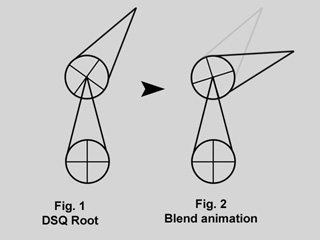
In figure 3, we have the same bone structure as it exists in the DTS shape. The blend animation is applied, and the node rotates about 30 degrees, as shown in figure 4.
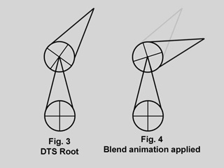
This is what you would expect to happen. The root position of the bones in the DSQ and the DTS shape are identical, so the animation applied appears to directly animate the nodes. This is not what is happening, and this is usually where people get confused.
In figure 5, we show the bone structure of a DTS shape where the root does not match the root position of the blend DSQ. In figure 6, we see the blend animation from figure 1 applied to a DTS shape with a different root position.
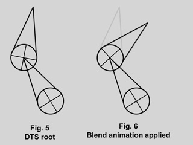
The blend animation did not alter the position of the whole chain. Instead, it only added the rotation value to the animated bone.
This is not a bug, this is the way it was designed to work. The values are added to the present state of the chain on a node by node basis.
Bear in mind that a blend can be played as a normal sequence, or it can be played on top of other sequences. When another sequence is playing, it will alter the root position, and the blend will be applied on top of that.
If you try to do a blend sequence where the root position is different than the 'normal' root (in the default root animation), you might expect that the blend will blend it to the new root (the position the character is positioned in during the blend animation). But it doesn't work this way. Since nothing would actually be animating, it doesn't move the bones to the new position. What is contained in the blend sequence is only transform offsets from the blend sequence root position.
It is a good idea not to have a different root position in your 'normal' animations and your blends, as they can easily get out of sync.
Blend Reference Time:
You can determine the position that the blend animation uses for the animation offset by using the blend reference time.
As already determined, the values added are based off of the root position in the DSQ file. This root position does not have to be the beginning of the animation. You can pick any position for the blend animation to reference. In this example, a different blend reference is used. The ghosted image in figure 7 represents the position where the blend reference is set (it is signified by the little round tick). When the animation is applied (the same animation as in figure 2) it will play it but add the values and offset the animation from the reference first.
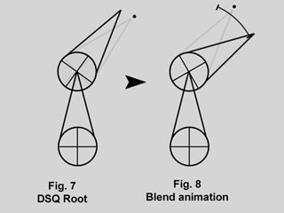
This is useful because you can have a blend animation that can have a reference position that is the 'root' position. For animation like hip twists and arm movements (as in the 'look' animation) the character can be in a natural default state. In this way, you can have one animation control the character through the base pose to an extreme in either direction while referencing the default 'base' state, which will exist somewhere in the middle of the blend animation.
The blend reference time allows one to set the reference position that the sequence considers to be the default state. In the current version of the exporter for 3DSMAX 4, enabling this (by putting key in the blend reference time track in the track view for the sequence) will crash 3DSMAX. There is a workaround for this bug, which will hopefully be fixed at some point. The default blend reference frame is the first frame of the file. So, go to frame 0 and put your nodes in the correct reference position. This will be the reference position for the blend animation.
Here are a few more screenshots that may help you to understand this a little better.
The first image is the base 'root' position of the character .
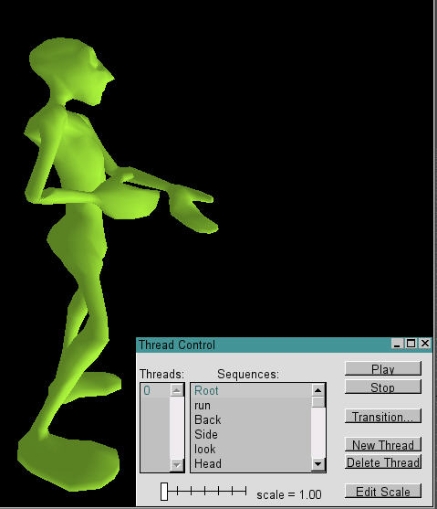
The next image is the look blend animation applied and set to the beginning of the sequence.
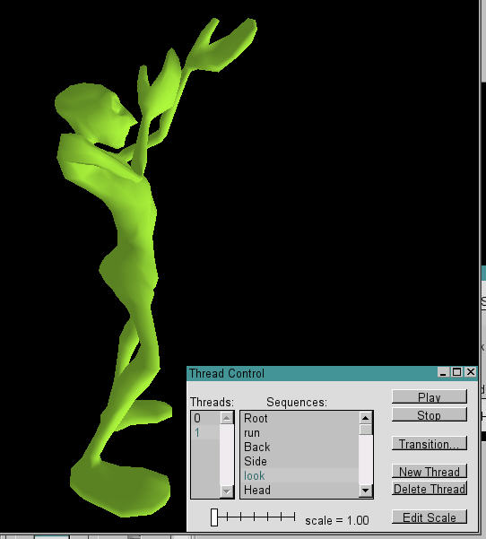
And near the end:
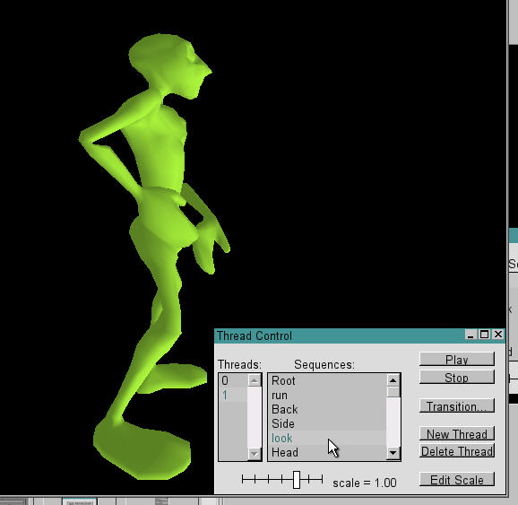
And the Blend Reference position, set to be the middle of the animation (where it passes through the root pose)
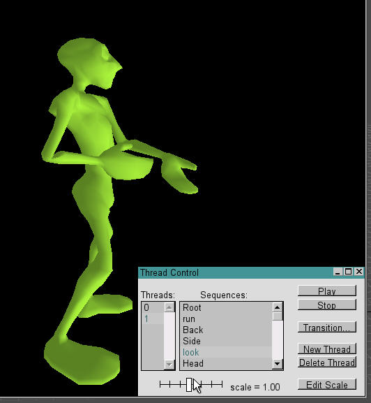
You can set the blend reference postion by putting a reference key in the correct spot in your animation, or, by leaving your character in the root position at frame 0 (the default reference position) and then animating the extreme positions after that in a sequnce that starts after frame 1.
If you didn't understand this part, don't worry. Blends are easily the most confusing (and most powerful) part of the Torque animation system.
Experiment with simple shapes in the ShowTool to figure out how it works and how you can use it.
Ground Transform:
Animation sequences that move the character must have ground transform. The engine knows that the character has a specific velocity in all directions (this is set in script). When the animations are being played, the engine is aware of what the distance covered is and plays the appropriate animation. If, for instance, the forward velocity of the character increases past the point of a walk animation to the speed of a run, it will transition to the run.
The exporter figures out the ground transform (meter per second over a given distance) by determining how much the bounding box has moved over the course of the animation in the 3DSMAX file. This is done automatically on export. You can allow the exporter to set the keys (use frame rate) or you can set it to sample the distance covered explicitly by telling the sequence to use N frames and sample at the beginning and end of the animation. Use N frames is one by default (with N=2) and should be sufficient for most applications.
If you have no ground transform, the animation will not play when the character moves. In the Torque Engine with the default character, the forward ground transform is approx=4m/sec.
Sequences types used by the the default game character:
What follows is a listing of the different types of animations that were used to create the default player character.
Normal Full Body:
These animations are what you would consider to be 'normal' animations, with all the nodes exporting and controlling the entire skeleton.
Root
All Sitting
All Death Aniamtions
All Celebrations
All Salutes
All Taunts
Lower Body Only:
These animations are exported with a .CFG file that isolates the nodes in the lower body of the character.
Forward
Backward
Side (not this is one animation played in reverse depending on direction)
Fall
Land
All Jumps
Blends:
These animations are blend animations that are designed to be played on top of the movement animations and exist in the same directory as the full body animations (using the same .CFG) but are set to blend in the sequence helper.
All Look
Head left/right
Head up/down
Recoil
Not that these are done by using one animation that goes from one extreme to the other with the blend reference being the center position of the animation. The sequence is usually initialized in to start in the middle and play either forward or backward from this state by the engine, which is determining the position of the animation from the user input (mouse look)
The .CS script file:
At runtime, the DTS and DSQ shapes are merged together to create a new shape that contains the mesh and all it's associated data (mountpoints, etc�) and the animations. This is done by including a .CS file for the shape in the directory with the DTS and DSQ file. The .CS file for the shape should be the same as the DTS.
player.dts has player.cs, etc
An example player.cs is located in the documentation file pack.
To construct a shape in engine, you start off with this at the beginning of the file:
datablock TSShapeConstructor(PlayerDTS)
This tells the engine the name of the shape it is constructing and is called in the engine.
After that, the shape and animations are added like this.
{
baseShape = "./player.DTS";
sequence0 = "player_root.DSQ root";
sequence1 = "player_forward.DSQ run";
sequence2 = "player_back.DSQ back";
sequence3 = "player_side.DSQ side";
sequence4 = "player_lookde.DSQ look";
sequence5 = "player_head.DSQ head";
sequence6 = "player_fall.DSQ fall";
sequence7 = "player_land.DSQ land";
sequence8 = "player_jump. jump";
};
The Base shape is added, and then all the sequences are added to the shape and given a number. All the numbersequnces reference a file. Names can be associated with the animations. You can see these names in the ShowTool in 'thread' control.
So, Sequence 0 is created in the shape, it uses the 'player_root.DSQ, which is named root.
Note that animations are called by name in the engine, the
sequence numbers are ignored. If you use the same animations and names
that are used in the demo, your character will work without any changes
to the code. Also, if you call your player 'player' you will not have to
alter any other scripts to get it to load as the player character.
The ShowTool Revisited:
If you did everything correctly, your player shape will load in the ShowTool, and it should be animating using sequence0 from your .CS.
If you are using a .CS, a 'new' shape is created by merging the DTS shape with the DSQ files specified in the .CS file. If the DSQ files contain nodes that are not in the DTS, they will not load. Warning messages will be generated in the console (press the ~ key to get the console) and can assist you in tracking down any problems with your shapes and animations.
If you did not make a .CS file, you can manually load animation sequences into the shape. As long as the DTS contains the nodes that are in the DSQ, it will load. It is important to note that the nodes are looked up by name, so if the naming convention matches in all your characters, you will be able to load animations across shapes. If, for example, you had a horse and a human, and they both have skeletons with the same naming convention, you will be able to load the horse animations into the human file and vice-versa. It will not resize the length of the bones in the DTS, it will only apply the rotation data to the skeleton in the DTS. It probably won't look very pretty, but it works.
Thread control:
Press the "Thread Control" Button.
The thread control window will come up.
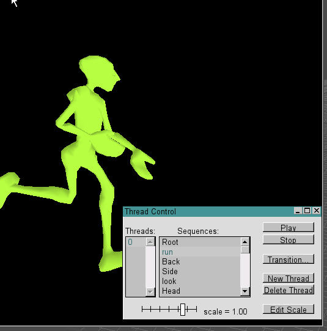
This is the window where you can playback and test all the animations in your shape. If you configured your .CS file properly, you should see all the animations that were created with the name of each of the animations as defined in the .CS.
You can click through the sequences running on thread 0 to view al the animations in the shape to make sure they are working properly.
You can also add another thread. You do this by clicking the 'New Thread' button. This will give you a second thread running that can load another animation. It is not usual to have multiple full body threads running at the same time, but it is normal to have multiple threads running for different parts of the body. You can have one thread controlling the lower body and switching between the different lower body animations, a second thread for arms, a third for the head, etc..
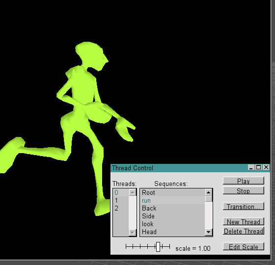
The threads can be controlled individually, started and stopped individually, played at different speeds (which can be tested using the 'Edit Scale' button on the bottom of the panel), and transition individually on a thread by thread basis. In code, animations can be controlled to respond the player input, play in reverse, play at different speeds based on player input, and transition at different speeds and over varied lengths of time, again on a thread by thread basis.
Transitions:
Although you cannot explicitly export or set transition parameters from 3DSMAX, the engine supports transitions. Transitions will transition from one sequence to another on a node by node basis over a set period of time (which can be varied). The transitioning in linear.
Using transitions allows the artist to animate without hitting the 'root' position accurately, as the engine will transition from one sequence to the other. This also allows for the engine to transition for one sequence to another mid-sequence (not returning to the root position). In this way, a character can go from a run to a walk mid-sequence (doesn't need to complete the animation) and the engine will interpolate the node positions during the change. This can introduce some strange behaviors, as the engine will take the shortest path to translate the nodes to the next state.
In the ShowTool, In the thread control window, you can press the 'Transition' button to bring up the 'Transition Control' window.
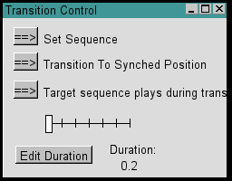
The transition control will allow you to test how one sequence transitions into another.
In the Window, the first button will be set to 'Set Sequence'. With it set like this, if will pop to each new animation as you click through the list in the Thread Control window. Change this setting by pressing the button. It will change to 'Transition to Sequence'. If you close the window, the sequences will now transition form one sequence to the next as you select them in the thread control window.
The other two buttons allow you to play with how the transition happens. By default, this is set to 'Transition to Synched Position'. This transition between the sequences using a default value. You can press this button to change the mode to 'Transtion to Slider Position', which allows you to use the slider to determine where on the target sequence you want the transition to go to. This was rarely used. The default values usually work fine.
The last button allows you to have the target sequence either play or pause during the transition. This is also rarely used and usually works better if the target sequence is playing during the transition.
The Edit Duration button doesn't work in this window. Don't use it.
Triggers:
Triggers can be added to sequence helper objects by using the "Trigger" track in the sequence helper's track view.
You can have up to 32 triggers (1-32) which are turned on by adding a keyframe with the appropriate trigger number as a value and turned off by adding another keyframe with negative value on the trigger number that you assigned on the first trigger keyframe.
If you like, you can only turn them on (and assume that the programmer will turn them off as they are read). As an example, the easiest way to deal with footsteps is to have one trigger for each foot (1=left, 2=right, say). You may have an application where you want to know when the foot is supposed to be on the ground. In that case you would turn on the "foot on ground" state when it first contacts the ground and turn it off when the foot leaves. Thus each foot would have 2 trigger keys: a + one when the foot hits the ground and a - one when it leaves. Add the values and keyframes in the 'trigger' track in the track view of the sequence helper.
If you want your character to leave footprints, all you have to do is go to the trigger track of the appropriate sequence and add a trigger key and a value. In the default Torque engine,1 = left foot, 2 = right foot.
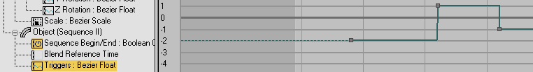
The screenshot above shows a right foot trigger lifting off (-2), left foot coming down (1) and lifting (-1).
Dropping the Character in the Game as A Player:
Eye, Cam, and Mount nodes for the Torque:
Eye and cam nodes are required for getting your character working correctly in the default Torque engine. These are special nodes referenced in code that determine where the player POV is and the rotation point for the orbiting death camera. These are usually linked to either the base of the character (the hip or Bip node for the cam, and the head for the Eye.
These are not required for the character to export or working, but are required for the character to be dropped in and work as a player correctly. If they are not included, the eye node will default to the base of the shape (the bounding box origin).
For weapons to mount correctly, the model must contain mount points. The weapon is mounted to 'Mount0". Without it, the gun will mount at the players bounding box origin.
Other mount points contained in your model may or may not crash the game or may prevent the character from working properly. If characters are exported and attempt to use the default animations, they should contain the Mount 0, Mount 1, Mount 2, Ski1, and Ski 2 nodes as these are referenced by some of the default animation sequences. If a sequence contains a node that is not in base shape, it will not be loaded into the shape.
Sequence Numbering and the .CS file:
When you create a .CS file for your shapes, it is important that they are entered into the list in the correct order. The animation are called by the engine by index number, not by name. If you don't want to change anything in code, use the same numbering scheme and animations contained in the player.cs (link to player.cs)that is included in this tutorial. If you want to change things around or add animations to your game, talk to the lead programmer on your team about the numbering scheme you wish to implement to call the animations.
|